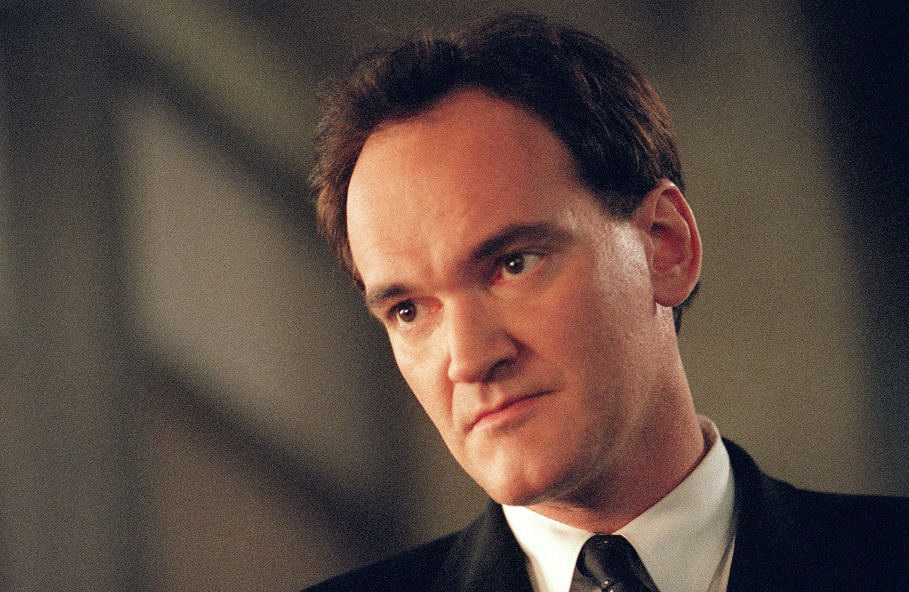

Quentin Jerome Tarantino (Knoxville, Tennessee, 27 de marzo de 1963) es un director de cine, productor, guionista, editor y actor estadounidense.
Su carrera comenzó a finales de la década de 1980, cuando escribió y dirigió My Best Friend's Birthday —cortometraje cuyo guion sería la base del argumento de la película True Romance, de Tony Scott (1993) y que fue parcialmente destruido durante un incendio—. En 1992 inició su carrera como cineasta independiente con el estreno de Reservoir Dogs, considerada por la revista Empire como «la mejor película independiente de todos los tiempos».1 Su popularidad no hizo sino crecer con su segundo largometraje, Pulp Fiction (1994), una comedia negra antológica que se convirtió en un enorme éxito de crítica y público, además de una pieza fundamental de la cultura popular.2 El semanario Entertainment Weekly la designó como la mejor película estrenada entre 1983 y 2008, y algunos críticos del British Film Institute la colocaron en el número 127 de las mejores películas de todos los tiempos.34 En Jackie Brown (1997), Tarantino rindió homenaje al género blaxploitation.
Seis años después, en la película dividida en dos partes, Kill Bill (2003-2004), Tarantino ofreció un relato de venganza que aúna tradiciones cinematográficas del cine de kung-fu, artes marciales japonesas, spaghetti western y terror italiano (giallo). En 2007 dirigió Death Proof, junto a su amigo Robert Rodriguez, y dos años después estrenó un proyecto largamente pospuesto y bien valorado por la crítica, Inglourious Basterds, que cuenta una ucronía sobre dos planes distintos para asesinar a los líderes políticos de la Alemania nazi.5 En 2012, con Django Unchained, Tarantino filmó su homenaje al wéstern, centrado en el mundo esclavista del sur de los Estados Unidos justo antes de la Guerra de Secesión, y que con una recaudación de 425 millones de dólares se alzó como su película con mayores ganancias en taquilla. En su octavo largometraje, The Hateful Eight (2015), rinde homenaje a las películas wéstern de gran presupuesto de 1960 y 1970, además de haber sido rodada en 70 mm. Cuatro años después, Tarantino regresaría a lo grande con Once Upon a Time in Hollywood (2019). La historia se centra en la vida del actor de Hollywood venido a menos, Rick Dalton (Leonardo DiCaprio), y la de su amigo y doble de acción, Cliff Booth (Brad Pitt). De manera paralela a la trama principal, se narran fragmentos de la vida de la actriz Sharon Tate (Margot Robbie) y de los miembros del culto la Familia Manson, liderada por Charles Manson.
El cine de Tarantino ha sido elogiado por la crítica y ha gozado del favor del público general, lo que lo ha convertido en un éxito comercial.67 Por ello, ha recibido numerosos galardones, como dos premios Óscar, dos Globos de Oro, dos premios BAFTA y la Palma de Oro del Festival de Cannes. En 2005 la revista Time lo incluyó en su lista de las 100 personas más influyentes y el cineasta e historiador Peter Bogdanovich también afirmó que es «el director más influyente de su generación».89 En diciembre de 2015, Tarantino recibió una estrella en el Paseo de la Fama de Hollywood por sus contribuciones a la industria del cine.